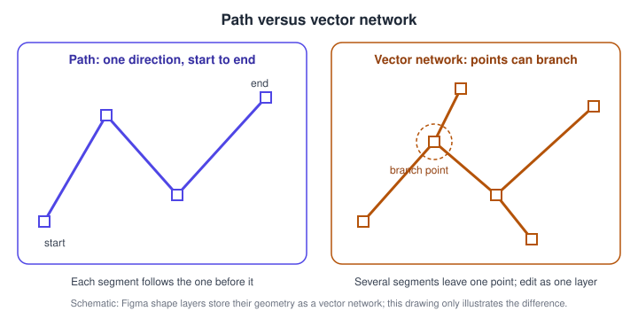
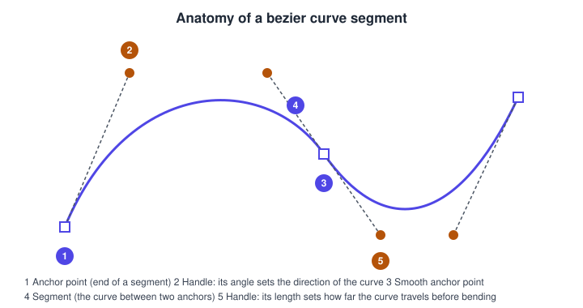
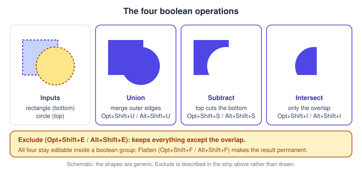
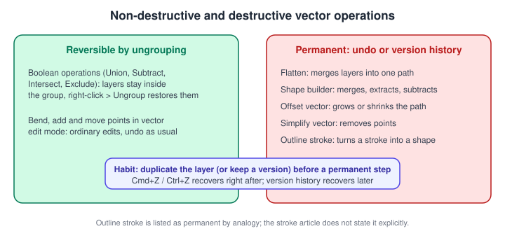
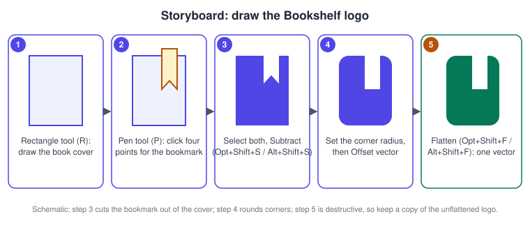

Shapes, Vectors and the Pen Tool
|
This content was generated with the assistance of AI and should be verified against the official documentation before being relied on in production. |
This page was written on 2026-10-30 against the UI3 interface of Figma Design, which has been the only interface since 2025-04-30. The shape tools, the Pen tool, vector edit mode, boolean operations, the shape builder, flatten, offset and simplify are all part of Figma Design, are generally available (none is in beta), and are documented by Figma as available on all plans, including Starter. Using them needs edit access to the file, which in the seat model in force since 2025-03-11 means a Full seat; View and Collab seats can look and comment but cannot change a vector. The Draw mode adds brushes and further illustration tools on top of these basics and is described on Figma Draw.
The running example is the Bookshelf app. This page builds the Bookshelf logo, a rounded book cover with a bookmark notch, using only native vector tools, and then explains each tool in turn. Frames that hold the logo are covered on Frames, Groups and Sections, its colours on Color, Fills and Images, and strokes on Strokes, Effects and Blend Modes; handing the finished logo to developers is the subject of Exporting Assets.
Where things live in UI3
Shape tools sit in the bottom floating toolbar, in the Shape tools menu that opens from the arrow next to the Rectangle button. The Pen tool is in the same toolbar. Everything else is reached from a selected layer: the right sidebar shows its position, size, corner radius, fill and stroke, the right-click menu offers Flatten and Outline stroke, and pressing Enter with a vector layer selected enters vector edit mode, where a secondary toolbar appears. Any command can also be found by name with the Actions menu (Cmd K on macOS, Ctrl K on Windows), as described on Navigation, Shortcuts and Actions.
| Tool or command | macOS | Windows | What it does |
|---|---|---|---|
Rectangle |
R |
R |
Rectangles and squares; four inner handles set the corner radius |
Line |
L |
L |
Straight line in any direction |
Arrow |
Shift L |
Shift L |
One-sided or two-sided arrow |
Ellipse |
O |
O |
Ovals and circles |
Pen |
P |
P |
Draws vector networks point by point |
Enter vector edit mode |
Enter |
Enter |
Edits the points of the selected vector layer |
Cut (in vector edit mode) |
X |
X |
Splits a point or path |
Eraser (in vector edit mode) |
Shift E |
Shift E |
Erases part of the vector |
Lasso (in vector edit mode) |
Q |
Q |
Freehand selection of points |
Union |
Option Shift U |
Alt Shift U |
Merge outer edges |
Subtract |
Option Shift S |
Alt Shift S |
Cut the top layers out of the bottom layer |
Intersect |
Option Shift I |
Alt Shift I |
Keep only the overlap |
Exclude |
Option Shift E |
Alt Shift E |
Remove the overlap, keep the rest |
Flatten |
Option Shift F |
Alt Shift F |
Merge layers into one vector |
Polygon and Star have no shortcut listed in the help article; choose them from the Shape tools menu. The Pencil and Brush tools are named by the vector help articles and belong to the Draw tools, so their shortcuts are not listed here; check the in-app shortcuts panel for the installed version.
Source: Figma Learn: Shape tools
Source: Figma Learn: Edit vector layers
Shape tools
The six shape tools are Rectangle, Line, Arrow, Ellipse, Polygon and Star. Dragging on the canvas draws the shape. While dragging, holding Shift constrains the result to a perfect square, circle or regular polygon, holding Option (macOS) or Alt (Windows) draws and resizes from the centre, and holding both does both.
-
Rectangle: corner handles resize the shape and four circular handles inside the corners adjust the corner radius, which can also be set in the right sidebar.
-
Line and Arrow: stroke colour, position, weight, style and endpoint caps are set in the right sidebar; dashed lines are set in the advanced stroke settings with a dash length and a gap length.
-
Ellipse: for semicircles, rings and donuts the help article recommends the Arc handles on the ellipse rather than building them with booleans.
-
Polygon: a triangle by default. Double-click it to enter edit mode and add or move points; dragging a corner handle towards the centre rounds the corners.
-
Star: five points by default, with handles for the Count of points (3 to 60), the Ratio of the inner points to the diameter and a Radius that rounds the points.
A shape is a layer with live properties: width, height and radius remain editable until its points are edited, at which point Figma treats it as a vector.
Source: Figma Learn: Shape tools
Paths and vector networks
A vector path is a sequence of segments that tells Figma where fills and strokes are drawn. Most drawing programs force a path to run in one direction, usually ending where it started. A Figma vector layer is a vector network: points may branch, so several paths can leave the same point without being drawn separately and combined afterwards. This is convenient for icons, where a single layer can hold a letter with a crossbar, and it is the reason the Pen tool does not need a "continue path" step.

Source: Figma Learn: Vector networks
A network has endpoints at its open ends, and caps apply only to open ends. With two endpoints, the right sidebar shows one cap setting per end. With more than two endpoints the caps move into the advanced stroke menu, and a single end is edited by selecting its point in vector edit mode. The cap styles are None, Line arrow, Triangle arrow, Reversed triangle, Circle arrow, Diamond arrow, Round and Square. The Round and Square caps add half the stroke weight; the arrow shapes are fixed in length.
Source: Figma Learn: Vector networks
The Pen tool and bezier handles
Press P and click to place the first point, then keep clicking to add points and straight segments. To make a curve, click and drag: the drag sets the length and slope of the bezier handles on that point. Each point on a curve owns one or two handles. The angle of a handle sets the direction in which the curve leaves the point and its length sets how far the curve continues before it bends.

-
Anchor points are the squares on the path.
-
A handle’s angle sets the direction of the curve at the point.
-
A smooth point has handles in a straight line, so the curve passes through without a kink.
-
A segment is the curve between two anchors.
-
A handle’s length sets how far the curve travels before bending.
Source: Figma Learn: Vector networks
To close a shape, move the Pen over an existing point; a small circle appears next to the cursor, and a click closes the path there. To leave the path open, press Esc. Handles can be adjusted afterwards with the Bend tool in vector edit mode. Select Bend, click a point or segment and drag its handles. Three mirroring options control how the two handles of a point relate: no mirroring (they move independently), mirror angle (the other handle copies the angle) and mirror angle and length (the other handle copies both). Shift-selecting both handles moves them together.
Source: Figma Learn: Edit vector layers
Vector edit mode
Select one or more vector layers and press Enter. In this mode the Move tool (V) moves points, the Pen tool (P) adds points, Shift click adds layers to the edit, and holding Cmd (macOS) or Ctrl (Windows) while clicking switches the active layer. The secondary toolbar offers Variable width, Shape builder, Cut, Bend, Eraser, Lasso and Paint. Basic shapes and paths from the Brush or Pencil tools become editable networks here.
-
Variable width: hover over a stroke to show a handle, click to add a width point and drag to change the width. It does not work on dynamic or dashed strokes or on branching networks; split the vector first (right-click, or the Actions menu).
-
Cut (X): click a point or path to split it, or drag across paths to divide them; the divided part moves to its own layer.
-
Eraser (Shift E): weight and shape are set in the right sidebar; erasing adds editable points and does not split the layer.
-
Lasso (Q): drag a freehand selection around points and paths.
-
Paint (Shift B): fills a region of the network with a solid or gradient fill chosen in the colour picker.
-
With several points selected, a bounding box appears. Shift while dragging resizes proportionally, Option or Alt resizes from the centre, Shift on a corner rotates in 15-degree steps and holding Space repositions the points.
Source: Figma Learn: Edit vector layers
Boolean operations
A boolean operation groups two or more layers into one object and computes a combined outline. It works on shapes, vector paths and text, but not on frames or sections. There are four operations.
-
Union merges the outer edges; the top layer sets the fill, stroke and effects.
-
Subtract removes the areas that overlap the bottom layer; the bottom layer sets the properties.
-
Intersect keeps only the area where all selected layers overlap; the top layer sets the properties. If the layers do not overlap, they disappear from view until moved back into overlap.
-
Exclude removes the overlapping areas and keeps the rest; the top layer sets the properties.

Source: Figma Learn: Boolean operations
Boolean operations are non-destructive. The layers stay inside the boolean group; their size, position, rotation and corner radius can still be changed, but not their individual fill, stroke, effects or opacity. Right-click the group and choose Ungroup to get the separate layers back. Union and Intersect apply strokes and effects to the outer path only, while Subtract and Exclude apply them along both edges when the result has an inner and an outer edge.
Source: Figma Learn: Boolean operations
Shape builder
The shape builder combines two or more vector layers by working on the regions where they overlap. Select the layers, press Enter for vector edit mode and choose Shape builder in the secondary toolbar. Then hover over a region and pick an option: drag across regions to merge them into one layer; click a region to extract it onto its own layer; hold Option (macOS) or Alt (Windows) and click a region to subtract it. Unlike boolean operations, the shape builder is destructive; recover with undo or version history.
Flatten, outline stroke, offset and simplify
These are the commands that make a vector permanent or reshape it.
-
Flatten merges a selection into one complex vector path (Option Shift F or Alt Shift F, or right-click > Flatten). Text can be flattened to customise letterforms, and flattening a frame or section merges its children and removes the container. Flattened layers cannot be separated again.
-
Outline stroke (right-click > Outline stroke) turns a stroke into a vector object. A common use is to remove or extend the half-length dash Figma adds at the ends of a dashed line.
-
Offset vector grows or shrinks a path evenly. Select the vector layer, click Offset vector, set Amount (positive expands, negative shrinks) and Join (square or round), and confirm with the check mark or Enter. Offsetting is destructive.
-
Simplify vector removes unnecessary points to smooth a path and reduce file weight. Select the layer, choose Simplify vector and drag the slider. A manual route is: Enter, select points with the Lasso, Shift Delete to delete and heal, Enter again. It is destructive.

Source: Figma Learn: Flatten layers
Procedures on the Bookshelf scenario

Source: Figma Learn: Boolean operations
Procedure: draw the Bookshelf logo.
-
Open the Bookshelf file and create or select a frame about 120 by 120 for the logo.
-
Press R and drag a rectangle about 76 wide and 100 high inside the frame; this is the book cover.
-
Press P and click four points to draw a tall, narrow shape for the bookmark that overlaps the cover’s upper edge, then click the first point (a small circle shows) to close it.
-
Select the cover and the bookmark, with the bookmark above the cover in the Layers list.
-
Press Option Shift S (macOS) or Alt Shift S (Windows) to Subtract; the bookmark shape is cut out of the cover.
-
Select the resulting group and ungroup it later if the corners need adjusting; as long as it is a boolean group, its layers stay editable.
-
Rename the layer to "Bookshelf logo".
Source: Figma Learn: Boolean operations
Procedure: make the logo permanent and slightly bolder.
-
Duplicate the logo layer and hide the original so you keep an editable copy.
-
Select the duplicate and press Option Shift F (macOS) or Alt Shift F (Windows) to Flatten it into one vector.
-
Click Offset vector, enter a small positive Amount such as 2, choose the round Join and press Enter.
-
If the shape has needless points, click Simplify vector and lower the slider until the outline stays smooth.
Procedure: build the "bookmark" icon with a branching network.
-
Press P, click once for the top-left point, once for the bottom notch point and once for the top-right point.
-
Press Esc to leave the path open, or click the first point to close it.
-
Press Enter to enter vector edit mode, pick Bend, click the notch point and drag its handles to curve the notch.
-
To add a branch, press P in vector edit mode, click an existing point and then click a new position.
Source: Figma Learn: Vector networks
Common mistakes
-
Flattening before duplicating, which removes the editable booleans; use undo or version history to recover.
-
Applying a boolean operation to frames, which Figma does not support; use a vector or shape layer.
-
Expecting Subtract to follow the layer you clicked last: the bottom layer sets the result’s properties and the top layers do the cutting, so the stacking order matters.
-
Using the shape builder or offset when a reversible boolean would do.
-
Assuming a View or Collab seat can edit points; editing needs edit access.
-
Outlining strokes and then expecting stroke settings to still apply; the result is a filled shape.
Where older guides are outdated
Guides written before April 2025 show the old interface, with a top toolbar and an older properties panel, so the click paths do not match UI3. They may predate the shape builder, offset and simplify commands and so describe workarounds such as strokes, masks and plugins for offsetting; the book-era seat names (editor and viewer) were replaced by Full, Dev, Collab and View seats on 2025-03-11. Their explanation of paths, bezier handles and boolean operations is still correct.
Source: Figma release notes